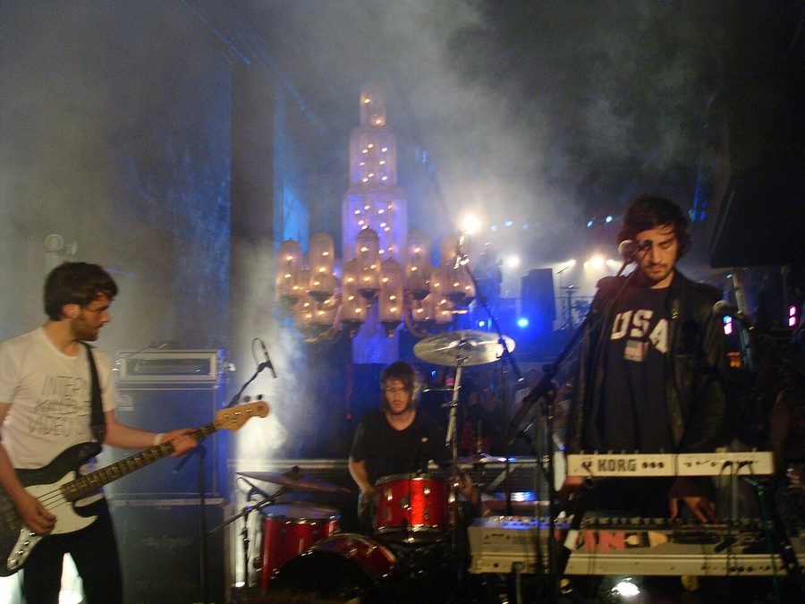

Midnight Juggernauts gear up for national tour



Midnight Juggernauts are one of the hottest indie/electro crossover acts out there at the moment and they’re just about to drop their debut album. And you’ll be able to get a taste when they take it on the road during August and September.
Winning much attention (and radio play) with their live performances, early EPs and tunes like Shadows and Raised by Wolves, and it goes without saying that their crossover sound is smokin’ hot at the moment across the world. A recent tour to Europe showed that they’re already building up their international fanbase so they’re set for big things when their debut album Dystopia hits the shelves later this year.
Catch Midnight Juggernauts at the following dates…
Thur 2nd Aug: Wollongong Uni, Garden Party
Fri 10th Aug: Republic Bar, Hobart
Sat 11th Aug: James Hotel, Launceston
Thur 16th Aug: Peninsula Hotel, Moorooduc
Fri 17th Aug: Corner Hotel, Melbourne
Sat 18th Aug: The Corner Hotel, Melbourne
Fri 24th Aug: The Metro Theatre, Sydney
Sat 25th Aug: The Metro Theatre, Sydney
Thur 30th Aug: CBD Hotel, Newcastle
Fri 31st Aug: The Tivoli, Brisbane
Sat 1st Sept: Anu Bar, Canberra
Fri 7th Sept: The Capitol, Perth
Sat 8th Sept: The Gov, Adelaide